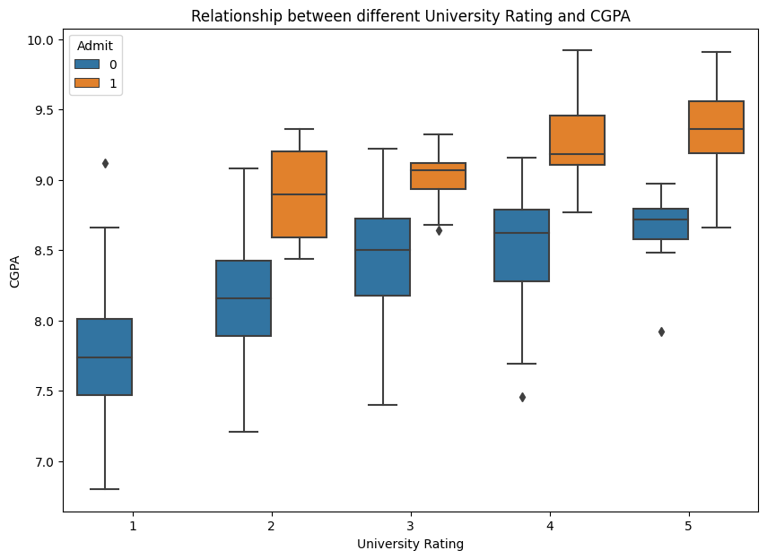
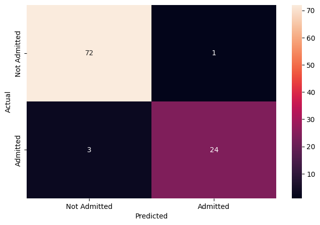
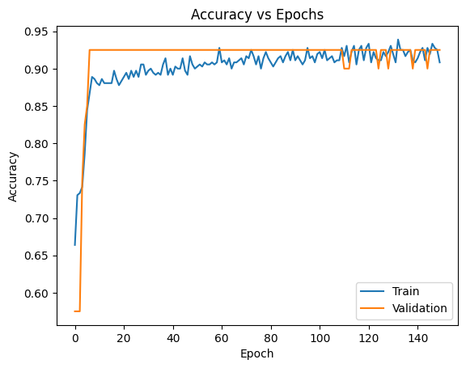
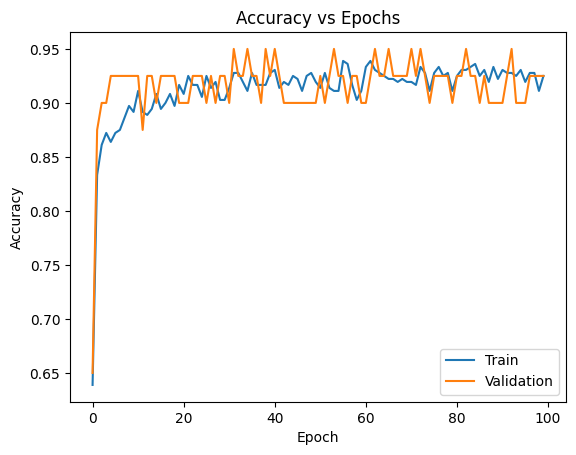
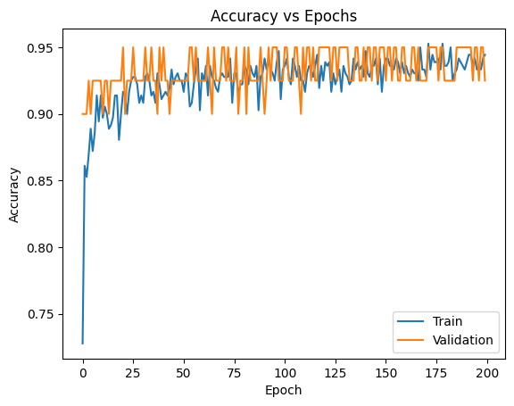

Overview
We wanted to predict whether a graduate-school applicant is likely to be accepted based on their academic profile.
- Applicants and admissions teams need an early signal of how strong a candidate's chances really are.
- Each student's chance of admission was reframed into a yes/no call using an 80% threshold (above 80% = Admit).
- Goal: train a feed-forward neural network to classify applicants as admitted or not from their scores and ratings.
- Success means accurately separating likely admits from unlikely ones on applicants the model has never seen.
Methodology
flowchart LR A[Raw Data] --> B[Clean & Encode] B --> C[EDA] C --> D[Train/Test Split] D --> E["CNN"] E --> F["Tune (Cross-Validation)"] F --> G["Evaluate: R2 / RMSE"]
The Data
We used a clean dataset of 500 past applicants, each described by their test scores and academic ratings.
- 500 applicant records with 8 columns, all numeric, and no missing values to clean up.
- Features include GRE, TOEFL, University Rating, SOP, LOR, CGPA, and research experience.
- Average GRE was ~316 of 340 and average TOEFL ~107 of 120, with some students scoring full marks.
- Serial number was dropped, and the continuous Chance of Admit was converted into the binary Admit target.
- Data was split 80:20 into training and test sets, with numeric features scaled and ratings one-hot encoded.
Exploratory Analysis
We charted the data to see how test scores and ratings relate to each other and to admission.
- GRE and TOEFL scores move together: students who score high on one tend to score high on the other.
- As GRE and TOEFL rise, the strength of the statement of purpose (SOP) also tends to increase.
- Scatter plots show a visible separation between students who were admitted and those who were not.
- Higher university ratings line up with higher CGPA and stronger overall admission chances.
- Boxplots confirm admitted students carry higher CGPA than those who were not admitted.


Key Drivers of Admission
A few academic measures stood out as the strongest signals of who gets in.
- CGPA is the clearest differentiator: admitted students consistently show higher grades.
- Strong, correlated GRE and TOEFL scores mark the most competitive applicants.
- University rating, SOP strength, and CGPA all rise together, reinforcing one another.
- Correlation heatmap confirms CGPA, GRE, and TOEFL are the most tightly linked to admission.
- Research experience and recommendation strength add supporting, secondary signal.

Modeling & Results
We built and tuned a neural network until it reliably predicted admission about 95% of the time.
- Started with a feed-forward network of 2 hidden layers plus an output layer, training 9,857 parameters.
- Compiled with binary cross-entropy loss and tuned optimizers, layer count, neurons, and learning rate.
- Accuracy-vs-epoch curves showed training accuracy rising and stabilizing well after 150 epochs.
- The final tuned model reached a generalized 95% accuracy on both training and validation data.
- On unseen test data it held 95% accuracy, with most precision and recall metrics above 90%.


Key Takeaways
The model gives a dependable, automated read on which applicants are likely to be admitted.
- A tuned neural network classifies admission likelihood with 95% accuracy on completely unseen applicants.
- CGPA, GRE, and TOEFL scores are the dominant drivers behind a strong admission profile.
- Reframing a continuous chance into a clear yes/no makes the output easy for stakeholders to act on.
- Careful scaling, encoding, and hyper-parameter tuning were key to reaching generalized performance.
- Built with: Python, pandas, NumPy, Matplotlib, Seaborn, scikit-learn, TensorFlow, Keras
More Visualizations

Tech Stack
- pandas — data wrangling and tabular manipulation
- numpy — fast numerical arrays
- scikit-learn — modeling, pipelines, and evaluation
- seaborn — statistical visualization
- matplotlib — plotting
- tensorflow — deep-learning framework
- keras — high-level neural-network API
Attribution
This project was completed as part of the MIT Applied Data Science Program (MIT IDSS / Great Learning). The program provided the case-study scaffolding; the analysis, code, and results are my own. Published with permission, for portfolio use only.